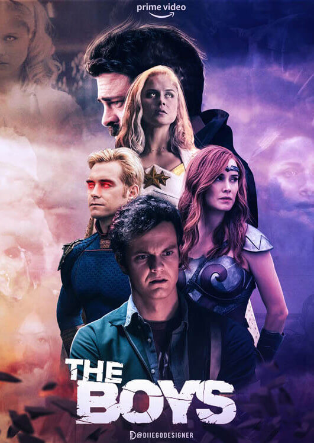
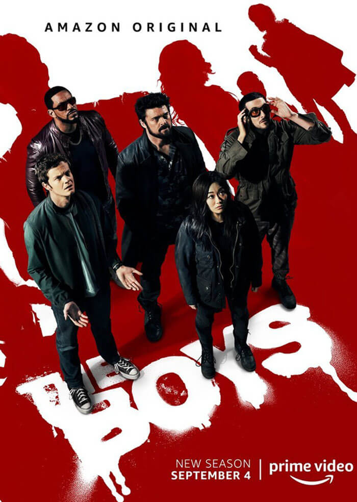

The Boys Season 2
Language: English
Starting Date: Sep 04,2020
Ending Date: Oct 09,2019
Genre: Superhero
Duration: 55-68 minutes
Episode: 8
 9/10
9/10 8.7/10
8.7/10 90/100
90/100 77/100
77/100
 4/5
4/5 Watch Now
Watch Now
 Listen Now
Listen Now
More Places to Get Songs
 Listen Now
Listen Now Listen Now
Listen Now
Description
Main Cast with Roles
Developer(s): Eric Kripke
Based On: The Boys by Garth Ennis and Darick Robertson
Summary:A group of vigilantes sets out to take down corrupt superheroes who abuse their superpowers.SourceIMDB
The Boys is set in a universe where superpowered individuals are recognized as heroes by the general public and work for the powerful corporation Vought International, which markets and monetizes them. Outside of their heroic personas, most are arrogant and corrupt. The series primarily focuses on two groups: the Seven, Vought's premier superhero team, and the eponymous Boys, vigilantes looking to bring down Vought and its corrupt superheroes. The Boys are led by Billy Butcher, who despises all superpowered people, and the Seven are led by the narcissistic and violent Homelander. At the start of the series, the Boys are joined by Hughie Campbell after a Seven member kills his girlfriend and the Seven are joined by Annie January, a young and hopeful heroine forced to face the truth about those she admires. Other members of the Seven include the burned-out Queen Maeve, drug-addicted A-Train, insecure the Deep, the mysterious Black Noir, and supremacist Stormfront. The Boys are rounded out by tactical planner Mother's Milk, weapons specialist Frenchie, and superpowered test subject Kimiko. Overseeing the Seven is Vought executive Madelyn Stillwell, who is later succeeded by publicist Ashley Barrett. The first season depicts the initial conflict between the Boys and the Seven, which is motivated by Butcher believing Homelander caused his wife's disappearance. While Homelander and Stillwell conspire to receive government support for superheroes, the Boys attempt to stop them by uncovering Vought's secrets. Initially unaware of each other's affiliations, Hughie and Annie muddle the conflict when they enter into a relationship, despite Butcher's distrust of her.SourceWikipediaPlot
The Boys Season 2 All Episodes
| Epsiode | Title | Director | Writer |
|---|---|---|---|
| S2-Ep1 | The Big Ride | Phil Sgriccia | Eric Kripke |
The Boys become wanted fugitives, with Butcher framed for Stillwell's murder. In hiding together, Hughie, MM, Frenchie, and Kimiko learn that a superpowered terrorist with telekinetic abilities is on the loose. They attempt to inform Raynor, but she is killed by an unknown assassin. Against Hughie's wishes, Frenchie contacts Butcher to lead the Boys in facing the new threats. Hughie and Annie extort Vought test subject Gecko into stealing a Compound V sample. Homelander's power over Vought is challenged when CEO Stan Edgar has superhero Stormfront join the Seven without his approval. When Homelander fails to intimidate Edgar, he returns to Becca's house to see Ryan. The Deep joins the Church of the Collective in an attempt to regain favor with the Seven.
| S2-Ep2 | Proper Preparation and Planning | Liz Friedlander | Rebecca Sonnenshine |
Butcher arranges a deal with Mallory to capture the superpowered terrorist in exchange for Mallory finding Becca's location. The Boys later learn the terrorist is Kimiko's younger brother, Kenji, whom they manage to subdue. A-Train threatens to expose Annie's involvement with the Boys when he awakens from his coma, but Annie counters with the knowledge that he murdered Popclaw. Homelander forces himself into the secluded facility Becca and Ryan are living in so he can become a father figure to his son and teach him about his powers. Drugged by the Church of the Collective, the Deep hallucinates his gills encouraging him to value himself. Maeve tells Elena she fears Homelander will kill her if he finds out about their relationship.
| S2-Ep3 | Over the Hill with the Swords of a Thousand Men | Steve Boyum | Craig Rosenberg |
Homelander pushes Ryan into using his powers, which culminates in Ryan attacking Homelander to protect Becca. Using the sample she acquired from Gecko, Annie secretly leaks that Compound V is responsible for giving superheroes their powers. Edgar responds by sending the Seven after Kenji when he is spotted by the police. The Boys attempt to bring Kenji to a CIA safehouse, but the Seven's arrival results in Kenji escaping. Disobeying Homelander's orders, Stormfront kills Kenji, slaughtering several minority civilians in her pursuit, and frames Kenji for their deaths. Edgar uses the destruction to argue that superheroes are necessary to prevent such incidents, while casting Compound V as the work of rogue scientists led by Stillwell.
| S2-Ep4 | Nothing Like It in the World | Fred Toye | Michael Saltzman |
Mallory provides Butcher with information on a superhero called Liberty and Becca's location. Butcher infiltrates the facility, but Becca refuses to leave because he does not accept Ryan. Black Noir discovers Butcher's infiltration. Threatened by Homelander, Annie joins Hughie and MM in investigating Liberty. The three discover that Liberty is Stormfront, who committed a racially-charged murder in the 1970s. Growing more unstable from Stormfront usurping his popularity, Homelander removes the physically-weakened A-Train from the Seven and outs Maeve's relationship with Elena. Frenchie realizes his efforts to protect Kimiko are motivated by guilt over his past crimes. The Church of the Collective enters the Deep into an arranged marriage.
| S2-Ep5 | We Gotta Go Now | Batan Silva | Ellie Monahan |
Protests emerge against Homelander when a video of him killing a civilian surfaces. Stormfront helps Homelander regain popularity and the two enter a sexual relationship. Butcher plots his retirement at his aunt Judy's house after failing to rescue Becca, prompting Hughie and MM to intervene. The three are attacked by Black Noir, but Butcher has Edgar call him off by threatening to release information on Ryan. Annie discovers Stormfront has been in contact with Edgar regarding the Sage Grove psychiatric hospital. A confrontation between Annie and Stormfront ensues over the former leaking Compound V to the public and the latter's past as Liberty. Maeve reveals to Elena that she is planning Homelander's downfall and recruits the Deep to assist her.
| S2-Ep6 | The Bloody Doors Off | Sarah Boyd | Anslem Richardson |
Infiltrating Sage Grove, MM, Frenchie, and Kimiko discover captive Compound V patients. Frenchie recognizes an orderly as Lamplighter, causing a scuffle that allows patients to break out. Forced to work together in surviving, the Boys learn from Lamplighter that Vought is attempting to stabilize Compound V in adult subjects. Lamplighter is spared by Mallory at Frenchie's behest over his remorse for killing her grandchildren. Stormfront tells Homelander she is the first successful Compound V subject and founder Frederick Vought's widow, wanting him to lead the superpowered to world domination. Maeve obtains a video of Homelander abandoning the plane as leverage against him. Unstable patient Cindy escapes Sage Grove. A-Train is lured into the Church of the Collective.
| S2-Ep7 | Butcher, Baker, Candlestick Maker | Stefan Schwartz | Craig Rosenberg |
Congresswoman Victoria Neuman schedules a hearing against Vought, with Lamplighter as the chief witness. After Vought uncovers Annie's betrayal, Hughie convinces Lamplighter to join him in a rescue attempt, which results in the latter immolating himself to deactivate her holding cell. Annie escapes with the help of Maeve, who subdues Black Noir. Despite the loss of Lamplighter, Butcher strong-arms Vogelbaum into testifying against Vought. However, the hearing is sabotaged by an assassin who kills Vogelbaum and others in the same manner Raynor was killed. Meanwhile, Homelander and Stormfront manipulate Ryan into leaving Becca. A-Train grows suspicious of the Church of the Collective. Maeve and Elena break up over Maeve failing to save the plane.
| S2-Ep8 | What I Know | TBA | Rebecca Sonnenshine |
Helped by A-Train, Hughie and Annie leak Stormfront's Nazi past. Learning about Ryan from Becca, Butcher leads the Boys in rescuing him at Homelander's cabin. Butcher reneges on a deal with Edgar to have Vought recapture Ryan and instead attempts saving him and Becca from Stormfront. When Stormfront attacks Becca, Ryan cripples her with his eye lasers, but accidentally kills Becca. Butcher forgives Ryan after Ryan takes his side over Homelander, while Maeve uses the plane footage to force Homelander into releasing them. Afterwards, the Boys are cleared of their charges and Annie is reinstated into the Seven. The Church of the Collective also has A-Train rejoin, but not the Deep. Ryan is taken by the CIA. Hughie gets a job with Neuman, unaware she is the superpowered assassin
SourceWikiPedia



The Boys Season 2 Poster
Videos
Trailer #1
Official Teaser Trailer #2More Videos